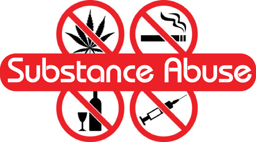

|  |
| Home | Need Help? | How to Help |
Many people don't understand why or how other people become addicted to drugs. They may mistakenly think that those who use drugs lack moral principles or willpower and that they could stop their drug use simply by choosing to. In reality, drug addiction is a complex disease, and quitting usually takes more than good intentions or a strong will. Drugs change the brain in ways that make quitting hard, even for those who want to. Fortunately, researchers know more than ever about how drugs affect the brain and have found treatments that can help people recover from drug addiction and lead productive lives.
Addiction is a chronic disease characterized by drug seeking and use that is compulsive, or difficult to control, despite harmful consequences. The initial decision to take drugs is voluntary for most people, but repeated drug use can lead to brain changes that challenge an addicted person’s self-control and interfere with their ability to resist intense urges to take drugs. These brain changes can be persistent, which is why drug addiction is considered a "relapsing" disease—people in recovery from drug use disorders are at increased risk for returning to drug use even after years of not taking the drug.